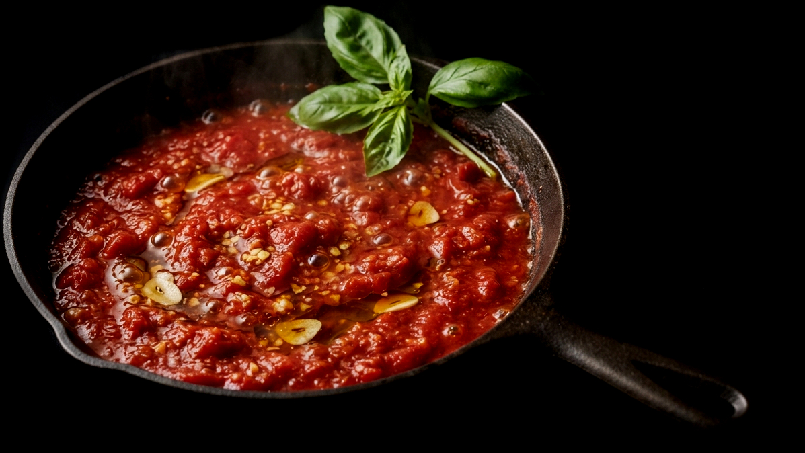
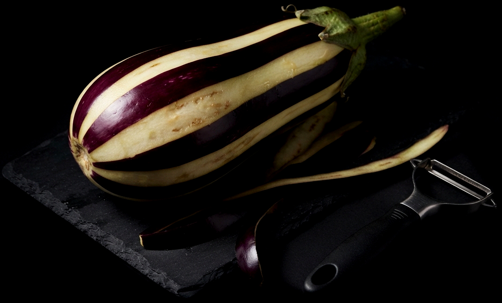
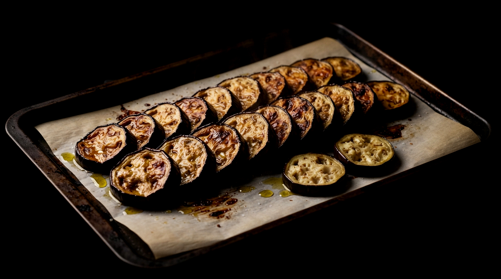
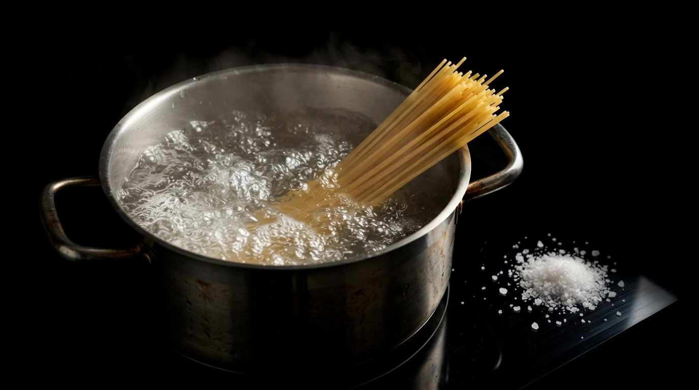
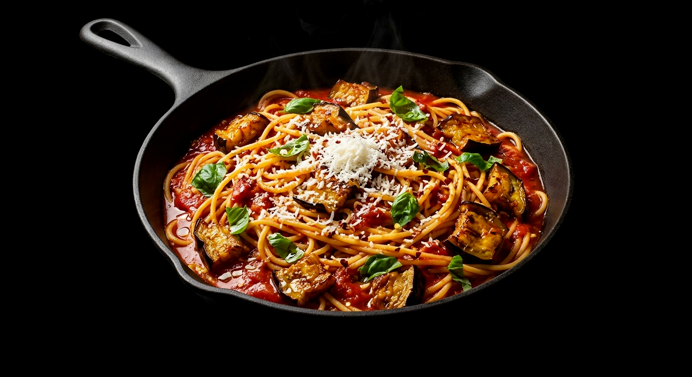

INGREDIENS
- Marinara Sauce
- Eggplant
- Extra-Virgin Olive Oil
- Pasta Rigatoni
- Fresh Basil
- Ricotta Salata
~ The Method ~
- Build the marinara: gently sweat sliced garlic in good extra-virgin olive oil over low heat until fragrant and barely golden. Add crushed San Marzano tomatoes, a pinch of salt, and a basil stem, then simmer for 15 to 20 minutes until the sauce is glossy and lightly reduced. Remove the basil stem and keep the sauce covered over the lowest heat.
- Peel the eggplant: following Ottolenghi's technique, use a vegetable peeler to remove lengthwise strips of skin, leaving alternating bands of peel for a zebra-striped effect. This keeps some of the skin's texture without stringy peel in the finished dish.
- Roast the eggplant: slice into even rounds about 1.5 cm (0.5 in) thick, brush both sides generously with olive oil, and season with fine salt. Roast on a lined tray at 220°C (425°F), turning once, until deeply golden and tender, about 25 to 30 minutes.
- Cook the pasta: bring a large pot of water to a rolling boil and season it well, until it tastes lightly of the sea. Cook the pasta 1 to 2 minutes short of the package time so it finishes in the sauce.
- Reserve the pasta water: just before draining, set aside a cup of the starchy cooking water, as its starch binds the sauce to the pasta. If you forget, a splash of hot tap water works in a pinch.
- Marry the pasta and sauce: transfer the drained pasta to the pan with the marinara and toss over medium heat, adding splashes of pasta water until the sauce clings and turns silky.
- Finish the dish: off the heat, fold in torn fresh basil, most of the grated ricotta salata (reserving some for garnish), and a pinch of chili or other spices if desired. Gently fold in the roasted eggplant, letting some pieces break down into the sauce for body.
- Plate and serve: taste and adjust the salt, then plate in warm bowls and garnish with the reserved cheese and a few small basil leaves. Serve immediately. Buon appetito.




